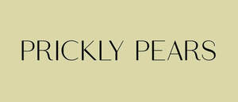
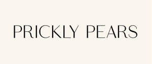

Trade Mark Journal No.2025/045 7 November 2025
UK00004283360 24 October 2025 (18,24,25,35)
Mark 1

Mark 2

- Class 18
- Bags; Tote bags; Duffle bags; Carry-on bags; Toiletry bags; Bags for clothes; Drawstring bags; Carry-all bags; Carrying bags; Grocery tote bags; Cross-body bags; Bags for umbrellas; Luggage, bags, wallets and other carriers; Diaper bags; Crossbody bags; Cloth bags; Bucket bags; Leather bags; Nappy bags; Canvas bags; Shoe bags; Clutch bags; Travel bags; Messenger bags; Souvenir bags; Bags for travel; Garment bags; Leather bags and wallets; Toilet bags; Shoulder bags; Make-up bags; Cosmetic bags; Reusable shopping bags; Makeup bags; Umbrella bags; Towelling bags; Bags for carrying pets; Knitted bags; Hand bags; Bags [envelopes, pouches] of leather for packaging; Travelling bags; Flight bags; Overnight bags; Beach bags; Mesh shopping bags; Leather shopping bags; Canvas shopping bags; Knitting bags; Bum bags; Wash bags for carrying toiletries; Waist bags; Pouches; Drawstring pouches; Leather pouches; Pouchettes.
- Class 24
- Towel sheet; Turkish towel; Towels; Quilts of towel; Bath wrap towels; Bath towels; Bathroom towels; Dish towels; Kitchen towels; Bath sheets (towels); Hand towels; Terry towels; Hooded towels; Face towels; Beach towels; Tea towels; Yoga towels; Face cloths of towelling; Large bath towels; Kitchen towels [textile]; Kitchen towels of textile; Textile face towels; Face towels of textile; Hand towels of textile; Turkish towels; Towels [textile] for the beach; Towels of textile; Towels [textile]; Towels [of textile]; Face towels of textiles; Textile hair drying towels; Towels [textile] for kitchen use; Cloth napkins; Towels of textiles; Bath linen; Household linen, including face towels; Tea cloths; Bath mitts; Linen cloth; Children's towels; Throws; Blanket throws; Bed throws; Throws (furniture coverings); Bed blankets; Blankets (Bed -); Woolen blankets; Lap blankets; Cot blankets; Sofa blankets; Picnic blankets; Woollen blankets; Baby blankets; Quilted blankets [bedding]; Silk bed blankets; Cotton blankets; Bed linen and blankets; Bed blankets made of cotton; Silk blankets; Bed clothes and blankets; Yoga blankets; Receiving blankets; Afghans [knitted covers]; Blankets for outdoor use; Flannel; Duvet covers; Children's blankets; Travelling blankets; Quilt covers; Flannel [fabric]; Bed quilts; Cot covers; Cot bumpers [bed linen]; Towelling coverlets; Gift wrap of fabric; Woolen cloth; Woolen fabric; Printers' blankets of textile; Quilts made of terry cloth; Crib bumpers [bed linen]; Bed covers; Pillowcases [pillow slips]; Fabric bed valances; Canopies (bed linen); Covers for duvets; Bed coverings; Printing blankets of textile material; Woollen cloth; Cushion covers; Woollen fabric; Wool loop knit fabrics; Valanced bed covers; Cotton knitted fabric; Fabrics made from wool, other than for insulation; Textile covers for duvets; Bed linen; Linen for the bed; Textile goods for use as bedding; Linens; Linen (Bed -); Bed clothes; Valances for beds; Bedsheets; Bedspreads; Household linens; Coverlets [bedspreads]; Valanced bed sheets; Bed linen and table linen; Textile piece goods for making bedding covers; Bed valances; Cot sheets; Bed canopies; Bath sheets; Linen; Textile fabrics; Textiles; Quilts of textile; Textile tablecloths; Tablecloths of textile; Textile fabrics for the manufacture of clothing; Handkerchiefs of textile; Textile handkerchiefs; Towelling [textile]; Curtains of textile; Textile napkins; Textile coasters; Coasters of textile; Furniture coverings of textile; Linen [fabric]; Terry linen; Woven linen fabrics; Kitchen linen; Table linen of textile; Household linen; Linen (Household -); Table linen; Textiles made of linen; Textile napkins [table linen]; Textile smallwares [table linen]; Valence linen; Bath linen, except clothing; Cotton cloths; Coasters [table linen]; Kitchen towels of cloth; Silk cloth; Silk [cloth]; Textile fabrics for use in the manufacture of towels; Flax cloth; Linen for household purposes; Cotton fabrics; Cotton fabric; Silk fabrics; Flax fabrics; Woven silk fabrics; Woollen fabrics; Hand-towels made of textile fabrics; Drink coasters of table linen; Tablecloths of textiles; Cloth doilies; Towels made of textile materials; Travelling rugs; Jute fabric; Jute cloth; Artificial silk; Textiles made of cotton; Knitted fabrics of cotton yarn; Hemp yarn fabrics; Textile piece goods made of cotton; Hemp cloth; Lace fabrics; Waste cotton fabrics; Fabrics made from cotton, other than for insulation; Cotton base mixed fabrics; Hemp fabric; Bath gloves; Table cloths; Table covers; Table runners; Runners (Table -); Kitchen and table linens; Table napkins of textile; Napkins of textile (Table -); Table linen, not of paper; Textile fabrics for use in manufacture; Tablemats of textile; Textile material; Doilies of textile; Textile fabrics in the piece; Textile handkerchieves; Textile used as lining for clothing; Napery of textile; Napery [textile]; Fabrics being textile piece goods for use in embroidery; Friezes of textile; Textile fabrics for use in the manufacture of bedding; Serviettes of textile; Textile serviettes; Viscose textiles; Fabrics being textile piece goods; Textile fabrics for use in the manufacture of pillowcases; Fabrics for textile use; Textile goods, and substitutes for textile goods; Coverings (Furniture -) of textile; Curtains of textile material; Textiles for upholstery; Fabrics being textile piece goods for use in patchwork; Textile fabric piece goods for use in the manufacture of clothing; Textiles and substitutes for textiles; Furnishing fabrics being textile piece goods; Textile fabrics for making up into household textile articles; Household textiles; Household textile goods; Blankets for household pets; Household textile articles; Household textile piece goods; Fabric; Muslin fabric; Textile fabric; Embroidery fabric; Non-woven fabric; Fabric curtains; Knitted fabric; Fabric valances; Gauze fabric; Foulard [fabric]; Fabrics; Fabric valences; Woven fabrics; Woven fabrics for cushions; Lining fabrics of textile in the piece; Corduroy fabrics; Upholstery fabrics; Batik fabrics; Shirt fabrics; Knit lace fabrics; Knitted fabrics; Kashmir fabric; Textile fabrics for use in the manufacture of curtains; Fabric place mats; Place mats of textile; Textile place mats; Table place setting mats of textile; Individual place mats made of textile; Mats of linen; Table mats, not of paper; Dinner mats of textiles; Table mats made of textile materials; Mats [coasters] of textile; Lace table mats not made of paper; Cloth; Table cloth of textile; Cloth coasters; Table cloths of textile; Table cloths made of textile; Napkin liners of textile; Table cloths, not of paper; Pillow shams; Pillow covers; Pillow slips; Pillow cases; Covers for pillows; Pillowcases; Covers for eiderdown and duvets; Flat bed sheets; Chenille fabric; Textile fabrics for use in the manufacture of furniture; Bedroom textile fabrics; Textiles for interior decorating; Fabrics for interior decorating; Textile fabrics for making into blankets; Textile fabrics for making into clothing; Curtains made of textile fabrics; Textile fabrics for use in the manufacture of sheets; Silk fabric for printing patterns; Hooded blankets; Jersey fabrics for clothing; Spun silk fabrics; Fabrics made from silk, other than for insulation; Rayon fabric; Wool yarn fabrics; Crepe [fabric]; Nylon fabric; Linen lining fabric for shoes.
- Class 25
- Beach clothes; Beach cover-ups; Beach clothing; Beach shoes; Beach footwear; Beach hats; Beach robes; Beach wraps; Sandals and beach shoes; Beachwear; Swimsuits; Swimwear; Trunks (Bathing -); Robes; Bath robes; Robes (Bath -); Lounging robes; Hooded bathrobes; Body linen [garments]; Silk clothing; Linen clothing; Knitwear [clothing]; Ready-to-wear clothing; Woolen clothing; Garments for protecting clothing; Layettes [clothing]; Headbands [clothing]; Headbands for clothing; Gloves as clothing; Clothes; Aprons [clothing]; Maternity clothing; Shorts [clothing]; Cashmere clothing; Leather clothing; Parts of clothing, footwear and headgear; Knitted clothing; Veils [clothing]; Embroidered clothing; Belts [clothing]; Bandeaux [clothing]; Belts for clothing; Casual clothing; Bottoms [clothing]; Playsuits [clothing]; Clothing for leisure wear; Ready-made clothing; Latex clothing; Woven clothing; Infant clothing; Trunks being clothing; Leisure clothing; Drawers as clothing; Athletic clothing; Clothing for children; Clothing for babies; Tops [clothing]; Men's clothing; Clothing; Jackets [clothing]; Capes (clothing); Clothing for infants; Leather (Clothing of -); Collars [clothing]; Drawers [clothing]; Clothing layettes; Corsets [clothing, foundation garments]; Clothing for sports; Kaftans; Caftans; Bandanas; Bandannas; Bandanas [neckerchiefs]; Casualwear; Loungewear; Hats; Scarves; Footwear; Bath slippers; Pajamas; Kimonos; Sleeping garments; Bucket hats; Silk scarves; Nightwear; Headwear; Children's headwear; Children's clothing; Cashmere scarves; Shawls.
- Class 35
- Retail services connected with the sale of clothing and clothing accessories; Retail services relating to clothing; Retail services in relation to bags; Retail services in relation to clothing; Retail services in relation to footwear; Retail services in relation to fabrics; Retail services in relation to tableware; Online retail store services in relation to clothing; Wholesale services in relation to jewellery; Wholesale services in relation to clothing; Wholesale services in relation to fabrics; Retail services relating to jewelry; Retail services in relation to clothing accessories; Wholesale services in relation to tableware; Retail services in relation to fashion accessories; Retail services in relation to jewellery; Mail order retail services for clothing; Mail order retail services for clothing accessories; Mail order retail services connected with clothing accessories; Online retail store services relating to clothing; Online retail services relating to clothing; Online retail services relating to jewelry; Online retail services relating to cosmetics; Online retail services for downloadable virtual clothing; Online retail services relating to handbags; Online retail services relating to toys; Online retail services relating to luggage; Online retail services in relation to downloadable virtual footwear; Online retail services in relation to downloadable virtual clothing; Online retail services in relation to downloadable virtual headwear; Online retail services in relation to downloadable virtual handbags; Business management of wholesale and retail outlets; Business management of wholesale outlets; Business management of retail outlets; Retail store services in the field of clothing; Administration of the business affairs of retail stores; Shop retail services connected with carpets; Management of a retail enterprise for others; Retail of third-party pre-paid cards for the purchase of clothing; Online marketing; Online advertising; On-line advertising and marketing services; Promotion, advertising and marketing of on-line websites; Internet marketing; Online advertising services; Online retail store services relating to cosmetic and beauty products; Advertising the goods and services of online vendors via a searchable online guide; Retail services in relation to downloadable virtual clothing; Retail services in relation to downloadable virtual footwear; Retail services in relation to downloadable virtual handbags; Retail services in relation to downloadable virtual headwear; Providing a searchable online advertising guide featuring the goods and services of online vendors; Providing a searchable online advertising guide featuring the goods and services of other on-line vendors on the internet; Providing searchable online advertising guides; Providing online marketplaces for sellers of goods and or services; Providing on-line auction services; Online advertisements; Online ordering services; On-line advertising; Online business networking services; Providing business information; Providing advertising services; Providing business information via a website; Advertising by mail order; Mail order retail services for cosmetics; Administrative processing and organising of mail order services; Electronic order processing; Direct mail advertising; Preparation of mailing lists for direct mail advertising services [other than selling]; Administrative order processing; Provision of an online marketplace for buyers and sellers of goods and services; Provision of an on-line marketplace for buyers and sellers of goods and services; Online community management services; Business and market research; Market research and business analyses; Market research and market analysis; Market research services; Market research for advertising; Business analysis of markets; Wholesale ordering services; Wholesale services relating to jewelry; Wholesale services in relation to bags; Wholesale services relating to clothing; Wholesale services in relation to footwear; Wholesale services in relation to headgear; Retail services relating to home textiles.
Prickly Limited